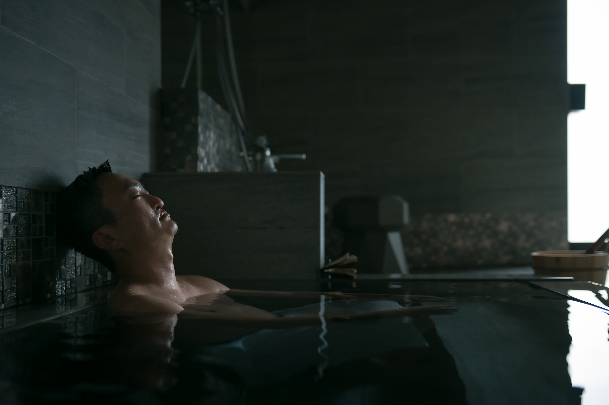

テレビ番組のレギュラー出演実績を持つサウナの専門家として、
サウナ関連の番組企画から出演まで対応いたします。

夕方の情報番組「news every.かごしま」内のレギュラーコーナー「サウナに行ってみっが」に出演。鹿児島県内のサウナ施設を訪問し、その魅力を視聴者にお届けしてきました。
全22回にわたる放送を通じて、サウナの正しい入り方から各施設の個性・こだわりまで、幅広いテーマで情報を発信。サウナ文化の普及に貢献しています。
「サウナに行ってみっが」の放送回をYouTubeでご覧いただけます。
霧島雲海テラス銘水の宿「霧の里」
"ととのう"提唱 濡れ頭巾ちゃんが初登場 ニューニシノ
サウナ王・太田広さんプロデュース 鹿児島市「moimoi」
サウナに関するメディア案件は、企画段階からご相談いただけます。
テレビ番組、Webメディア、雑誌などのサウナ特集について、企画立案から構成までお手伝いします。
施設の魅力を引き出すレポーターとして出演。22回のテレビ出演経験を活かした分かりやすい伝え方が強みです。
サウナ業界の最新トレンド、市場動向についての解説・コメント。専門家としての知見を提供します。
サウナ関連イベントへのゲスト出演やトークショーの登壇。集客力のあるコンテンツを提供します。